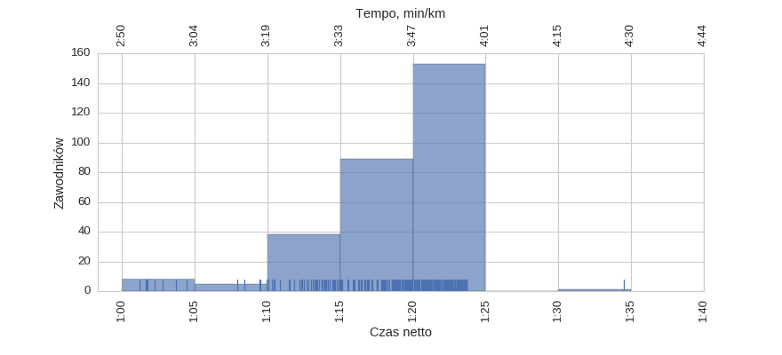

Statystyki biegowe
Statystyki biegowe12 Półmaraton Warszawski (2017) - test
Histogramy
Klasyfikacja generalna

| mean | std | min | 25% | 50% | 75% | max | |
|---|---|---|---|---|---|---|---|
| czas | 1:19:03 | 0:04:34 | 1:01:11 | 1:17:30 | 1:20:14 | 1:22:11 | 1:34:29 |
kobiety
| mean | std | min | 25% | 50% | 75% | max | |
|---|---|---|---|---|---|---|---|
| czas | 1:15:22 | 0:04:09 | 1:10:24 | 1:12:43 | 1:13:55 | 1:18:35 | 1:22:52 |
mężczyźni
| mean | std | min | 25% | 50% | 75% | max | |
|---|---|---|---|---|---|---|---|
| czas | 1:19:12 | 0:04:32 | 1:01:11 | 1:17:54 | 1:20:24 | 1:22:13 | 1:34:29 |
Korelacje międzyczasów z wynikiem końcowym
Korelacja tempa 5 / 21.0975 km
Korelacja tempa 10 / 21.0975 km
Korelacja tempa 15 / 21.0975 km
Korelacja tempa 20 / 21.0975 km
Histogram tempa na różnych dystansach
Wykresy rybkowe
wg płci
| czas_netto_s | count | |||||||
|---|---|---|---|---|---|---|---|---|
| mean | std | min | 25% | 50% | 75% | max | ||
| plec | ||||||||
| K | 1:15:22 | 0:04:09 | 1:10:24 | 1:12:43 | 1:13:55 | 1:18:35 | 1:22:52 | 12 |
| M | 1:19:12 | 0:04:32 | 1:01:11 | 1:17:54 | 1:20:24 | 1:22:13 | 1:34:29 | 282 |
wg kategorii
| czas_netto_s | count | |||||||
|---|---|---|---|---|---|---|---|---|
| mean | std | min | 25% | 50% | 75% | max | ||
| kat | ||||||||
| K20 | 1:17:10 | 0:04:38 | 1:10:24 | 1:13:44 | 1:18:15 | 1:20:38 | 1:22:52 | 7 |
| K30 | 1:12:50 | 0:01:08 | 1:11:31 | 1:11:49 | 1:13:01 | 1:13:48 | 1:14:03 | 5 |
| M20 | 1:17:03 | 0:06:08 | 1:01:11 | 1:14:05 | 1:19:13 | 1:21:54 | 1:23:42 | 71 |
| M30 | 1:19:47 | 0:03:39 | 1:03:43 | 1:18:37 | 1:20:44 | 1:22:20 | 1:23:43 | 144 |
| M40 | 1:20:04 | 0:03:35 | 1:10:18 | 1:18:41 | 1:20:54 | 1:22:06 | 1:34:29 | 59 |
| M50 | 1:21:31 | 0:01:32 | 1:19:29 | 1:20:13 | 1:21:39 | 1:22:52 | 1:23:25 | 8 |
Menu
HistogramyKorelacjeHistogram - międzyczasyWykresy rybkowe
∙ wg płci
∙ wg kategorii
Dystans: 21.0975 km
Liczba uczestników: 294
Wygenerowano: 2017-04-17 11:15:20.921940